第02讲 相反数与绝对值
第02讲 相反数与绝对值

课程标准 | 学习目标 |
①理解相反数、绝对值的概念 ②掌握相反数的性质 | 1．理解相反数、绝对值的概念，能正确求出一个数的相反数、绝对值； 2．掌握相反数的性质，并能进行多重符号的化简； 3．通过已知绝对值求这个数，初步培养学生逆向思维的数学思想方法。 |

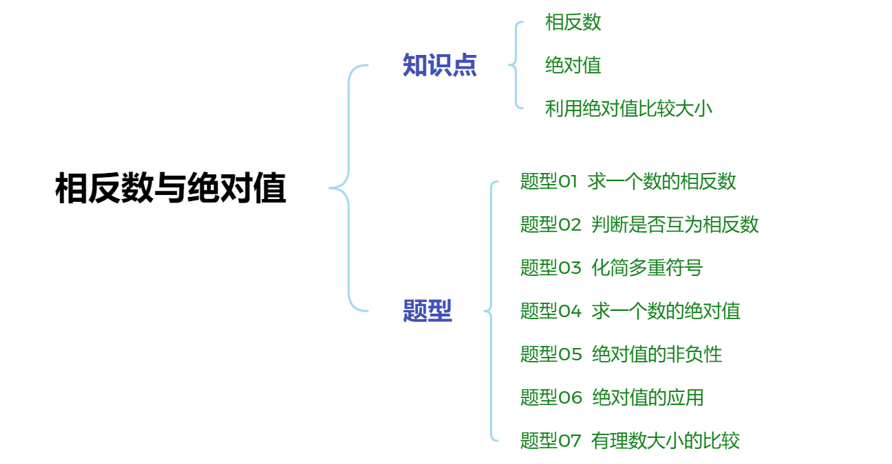

知识点01 相反数
1.概念:只有符号不同,数量相等，我们称其中一个数为另一个数的相反数.特别的0的相反数是0.
2.性质：若a与b互为相反数，则a＋b=0，即a=-b；反之，若a＋b=0，则a与b互为相反数.
3.多重符号的化简：①两个符号：符号相同是正数，符号不同是负数.②多个符号：三个或三个以上的符号的化简，看负号的个数.
（注意：当“—”号的个数是偶数个时，结果取正号 当“—”号的个数是奇数个时，结果取负号）
【即学即练1】
1．（2024·河南鹤壁·一模） 的相反数是（ ）
的相反数是（ ）
A．2024 B． C．
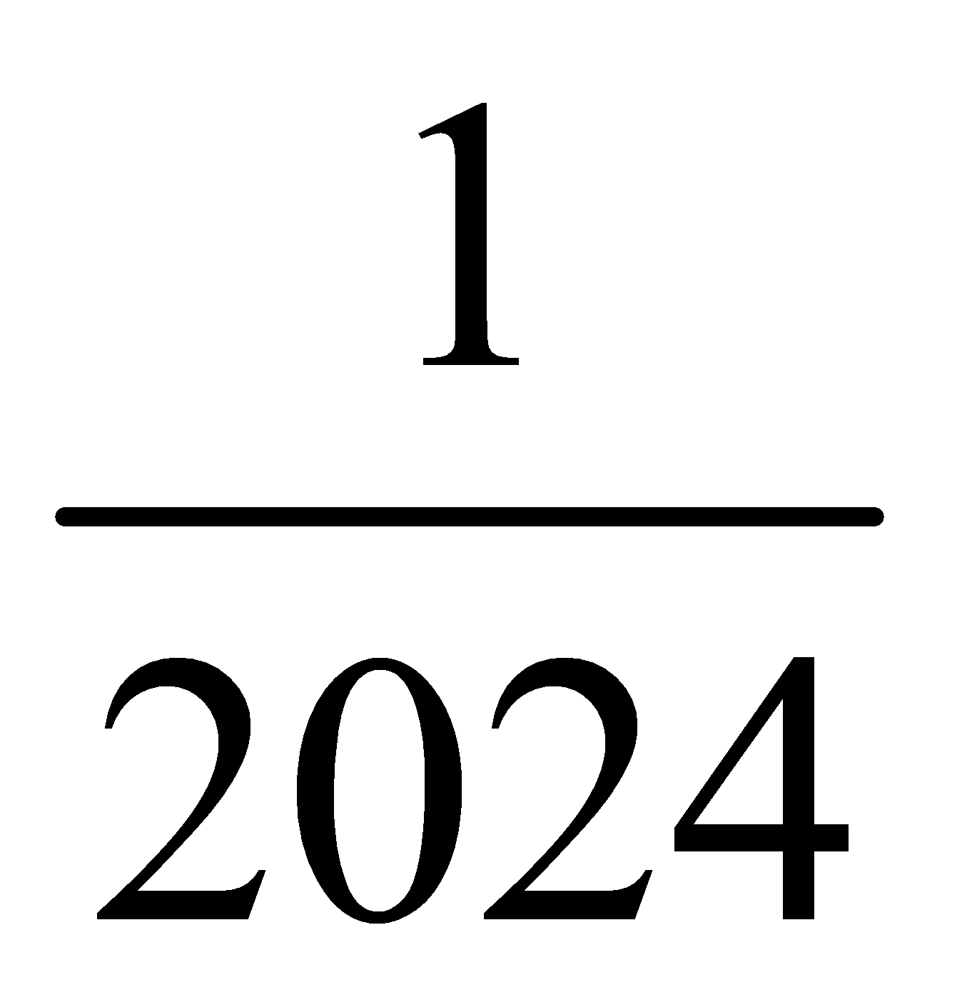
D．
【答案】A
【分析】本题考查了相反数的定义，根据只有符号不同的两个数互为相反数进行解答即可得．
【详解】解：的相反数是 ，
，
故选：A．
知识点02 绝对值
1.概念：一个数的数量大小叫做这个数的绝对值.
2.代数意义：①正数的绝对值是它的本身（若|a|＝|b|，则a＝b或a＝﹣b）；②负数的绝对值是它的相反数；③ 0的绝对值是0.
3.代数符号意义：①a＞0，|a|=a，反之，|a|＝a，则a≥0，|a|＝﹣a，则a≤0；②a = 0， |a|=0；③a＜0，|a|=-a.
注：非负数的绝对值是它本身，非正数的绝对值是它的相反数.
4.性质：绝对值是a (a＞0) 的数有2个，他们互为相反数.即±a.
5.非负性：任意一个有理数的绝对值都大于等于零，即|a|≥0.几个非负数之和等于0，则每个非负数都等于0.故若|a|＋|b|＝0，则a＝0，b＝0；
【即学即练1】
1．（24-25七年级上·全国·假期作业）化简： ；
； ；
； ．
．
【答案】 
 2
2
【分析】本题考查了绝对值：若 ，则
，则
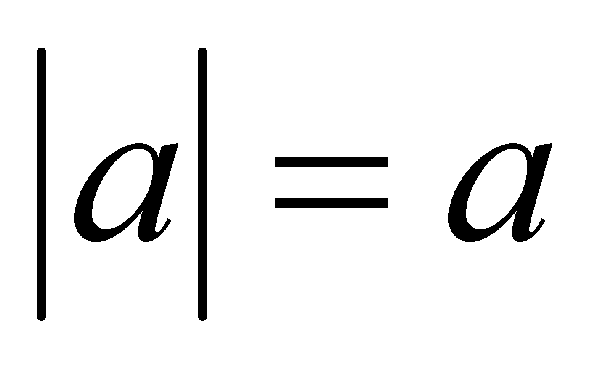
；若 ，则
，则 ；若
；若 ，则
，则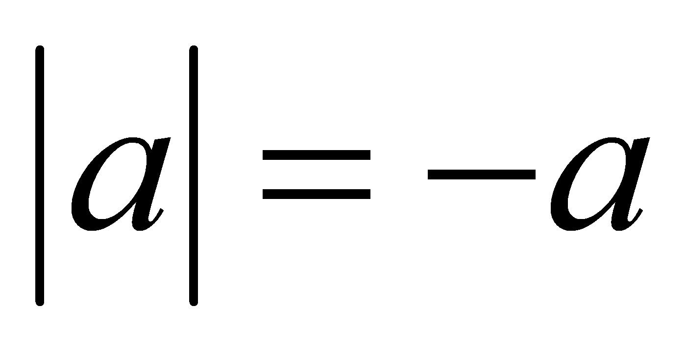
．【详解】解：
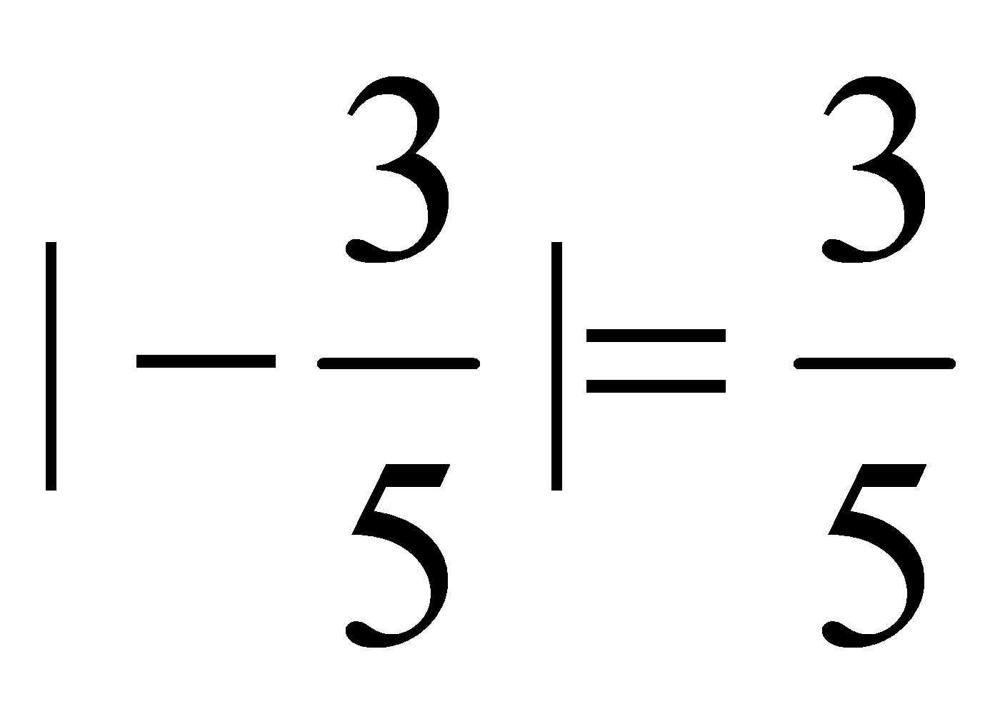
，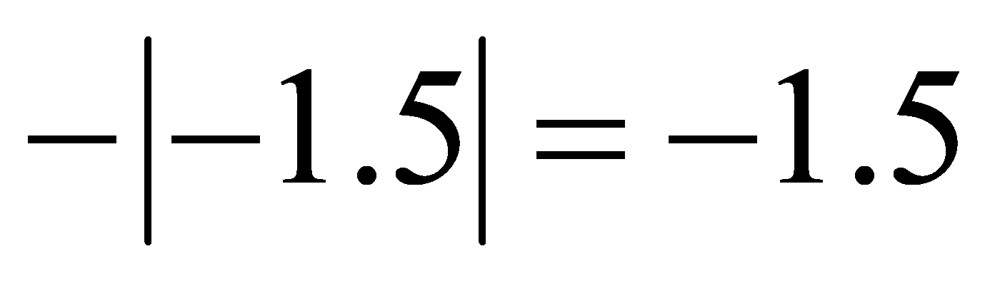
，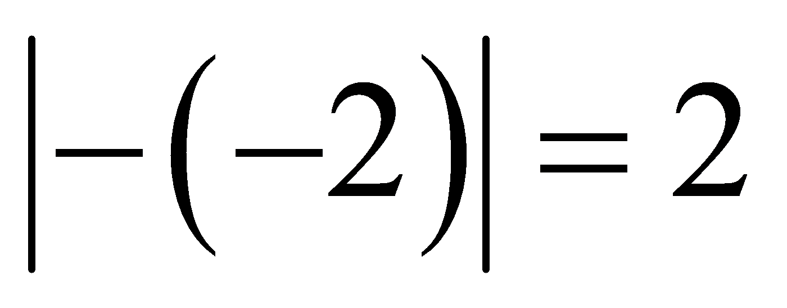
，故答案为：，，2．
知识点03 利用绝对值比较大小
1.代数比较法：正数大于零，负数小于零，正数大于负数.两个负数比较大小时，绝对值大的反而小.
【即学即练1】
1．（23-24七年级上·山东菏泽·阶段练习）比较下列各组数的大小（写出步骤）
(1) 与
与 ； (2)
； (2) 与
与 ．
．
【答案】(1)
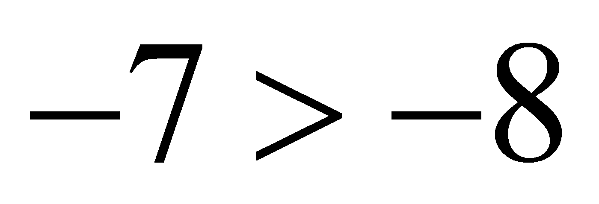
(2)
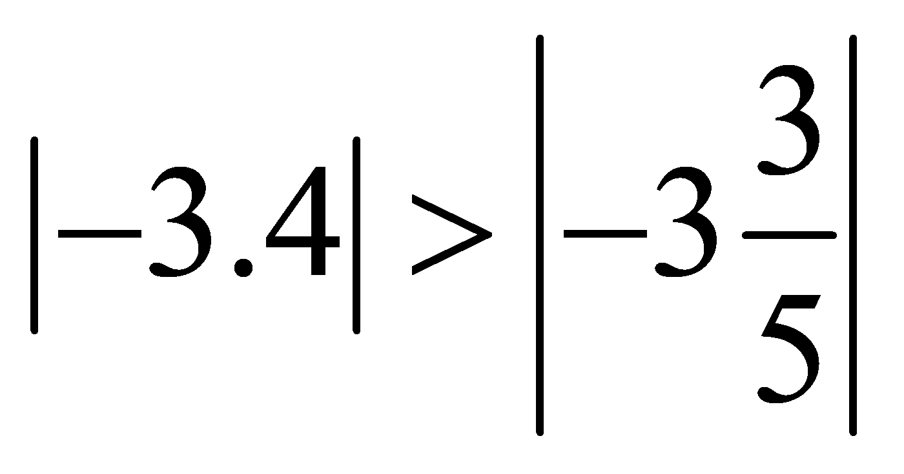
【分析】
此题主要考查了有理数大小比较的方法，要熟练掌握，解答此题的关键是要明确：①正数都大于0；②负数都小于0；③正数大于一切负数；④两个负数，绝对值大的反而小．
（1）先求出两个负数的绝对值，再比较绝对值大小，然后根据绝对值大的其值反而小求解即可．
（2）先求出两个负数的绝对值，再比较绝对值大小，然后根据绝对值大的其值反而小求解即可．
【详解】（1）解：∵
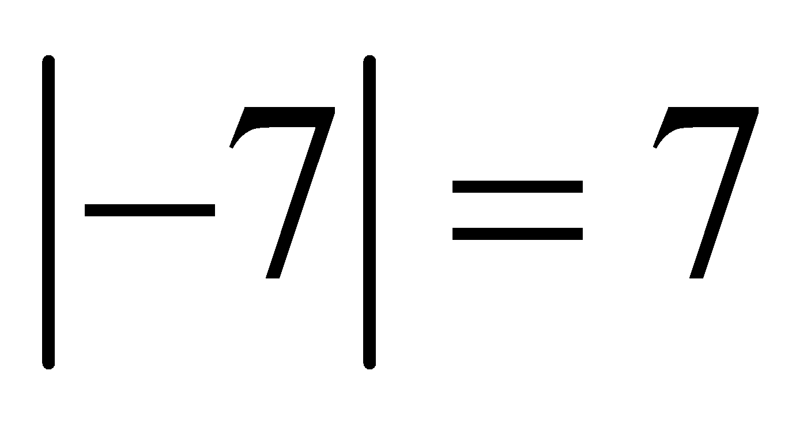
，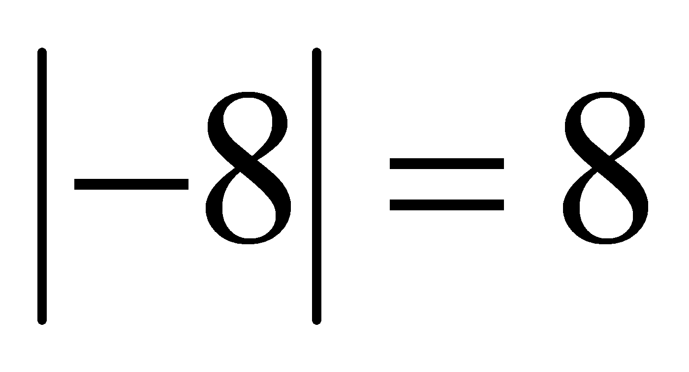
，又∵
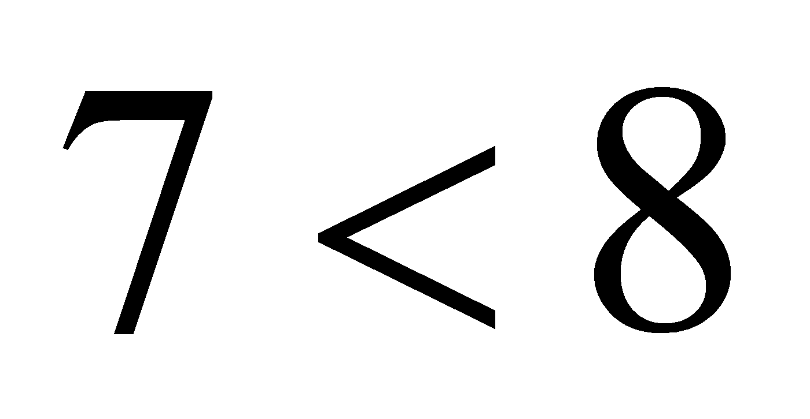
∴；
（2）解：∵
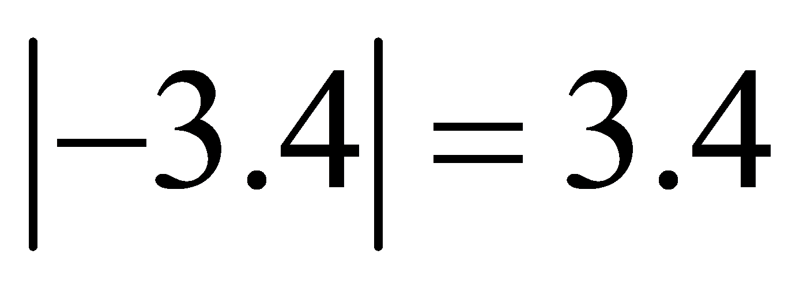
，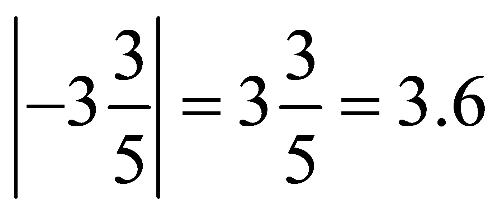
，又∵
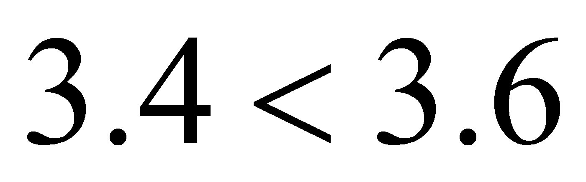
∴．

题型01 求一个数的相反数
【典例1】（2024·四川达州·中考真题）有理数2024的相反数是（ ）
A．2024 B． C． D．
C． D．
【答案】B
【分析】本题主要考查了求一个数的相反数，只有符号不同的两个数互为相反数，0的相反数是0，据此求解即可．
【详解】解：有理数2024的相反数是，
故选：B．
【变式1】（2024·甘肃武威·三模）
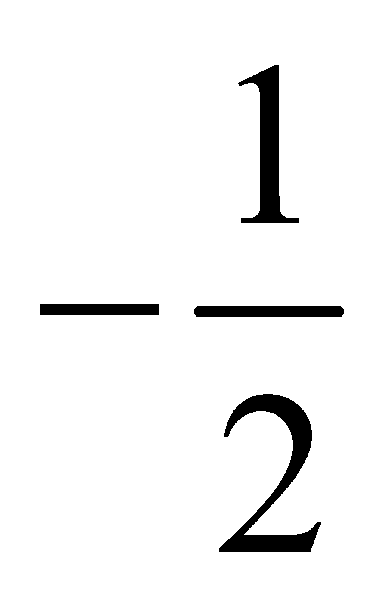
的相反数是（ ）A． B． C．
B． C． D．
D．
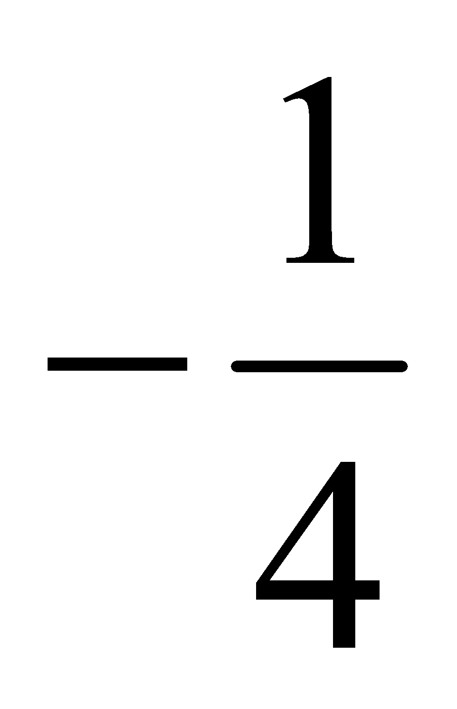
【答案】A
【分析】本题考查了相反数的定义，解答本题的关键是熟练掌握相反数的定义，只有符号不同的两个数是互为相反数，正数的相反数是负数， 的相反数是，负数的相反数是正数．根据相反数的定义作答即可．
的相反数是，负数的相反数是正数．根据相反数的定义作答即可．
【详解】解：的相反数是，
故选：A．
【变式2】（2024·山东济宁·一模） 相反数的是（ ）
相反数的是（ ）
A． B．
B． C．
C． D．
D．
【答案】A
【分析】本题考查了求一个数的相反数，根据只有符合不同的两个数是互为相反数即可解答．
【详解】解：
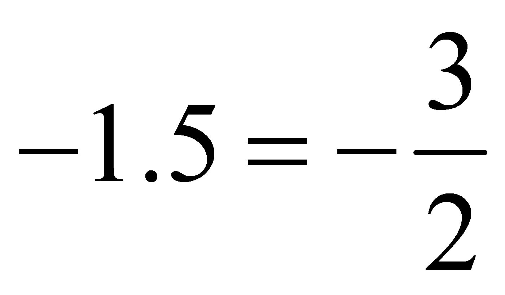
，而的相反数为；故选：A．
【变式3】（2024·陕西西安·三模） 的相反数是（ ）
的相反数是（ ）
A． B．
B．
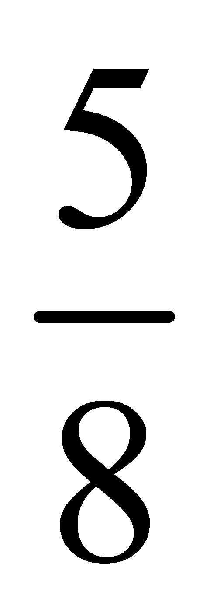
C． D．
D．【答案】C
【分析】本题考查相反数，根据只有符号不同的两个数互为相反数求解即可．
【详解】解：的相反数是，
故选：C．
题型02 判断是否互为相反数
【典例2】（2023·江苏连云港·模拟预测）下列各数中，互为相反数的是（ ）
A．5和 B．
B． 和 C．和
和 C．和 D．和5
D．和5
【答案】A
【分析】本题考查了相反数的定义，根据只有符号不同的两个数互为相反数，逐一判断即可．
【详解】解：5和互为相反数，
故选：A．
【变式1】（23-24七年级上·浙江杭州·阶段练习）下列各组数中，互为相反数的是( )
A． 和
和 B．和
B．和
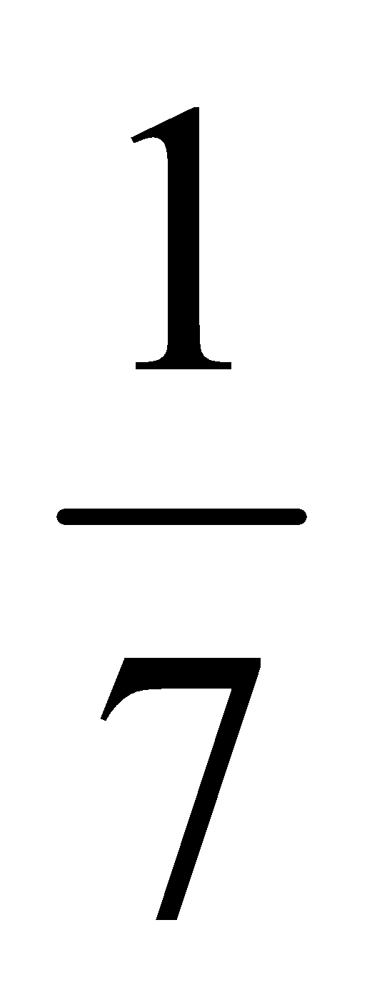
C．和- D．和【答案】A
【分析】本题考查了相反数的定义，根据只有符号不同的两个数互为相反数进行解答即可得．
【详解】解：A. 和，互为相反数，故该选项正确，符合题意；
B. 和，不互为相反数，故该选项不正确，不符合题意；
C. 和 ，不互为相反数，故该选项不正确，不符合题意；
，不互为相反数，故该选项不正确，不符合题意；
D. 和，不互为相反数，故该选项不正确，不符合题意；
故选：A．
【变式2】（2024·海南省直辖县级单位·二模）下列各组数中，互为相反数的是（ ）
A． 和2 B．2和 C．3和
和2 B．2和 C．3和
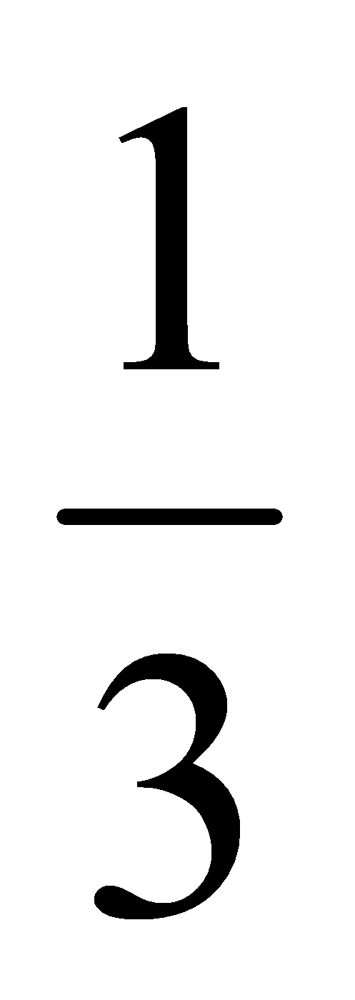
D．3和
【答案】A
【分析】本题考查了有理数的绝对值和相反数，熟练掌握基本知识是解题的关键．根据相反数和绝对值的定义逐项判断即得答案．
【详解】解：A、
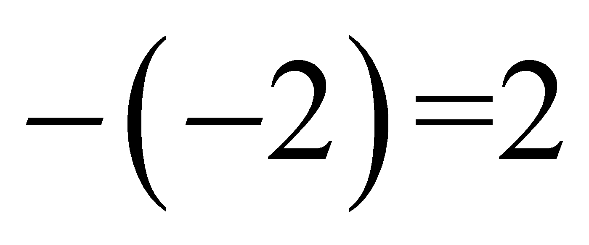
，和2互为相反数，故本选项符合题意；B、
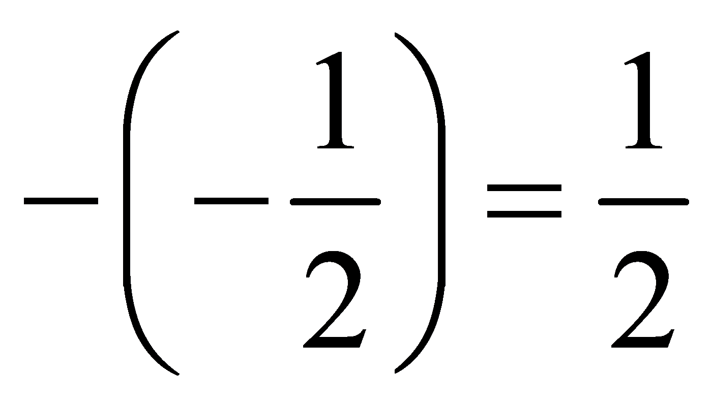
，2和不是互为相反数，故本选项不符合题意；C、3和不互为相反数，故本选项不符合题意；
D、 ，所以3和不是互为相反数，故本选项不符合题意．
，所以3和不是互为相反数，故本选项不符合题意．
故选：A．
【变式3】（23-24七年级上·辽宁丹东·期中）下列各组数中，互为相反数的是（ ）
A．
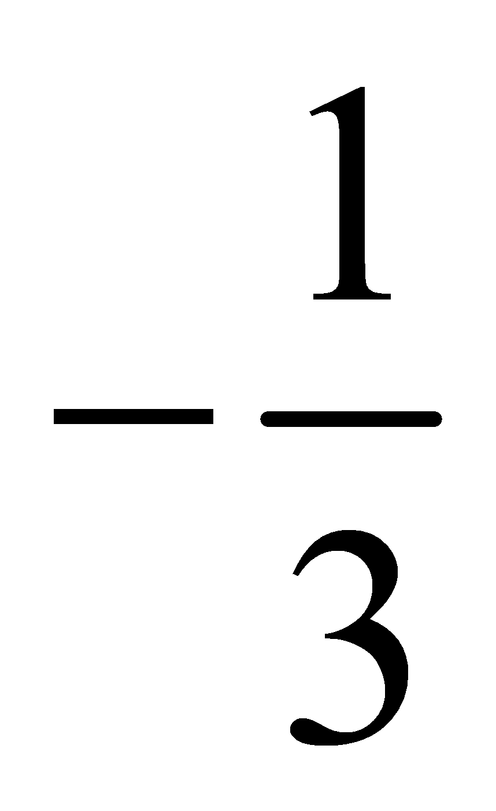
和 B．
B． 和
和 C．
C． 和
和 D．
D． 和
和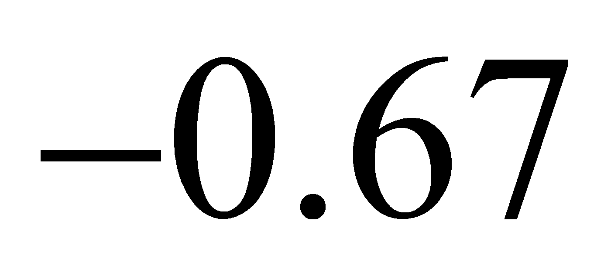
【答案】B
【分析】本题考查相反数的定义，熟记相反数的定义是解题的关键，相反数的定义：“只有符号不同的两个数叫做相反数”，利用相反数的定义即可得到答案．
【详解】解：A、和不是互为相反数，故此选项不符合题意；
B、和
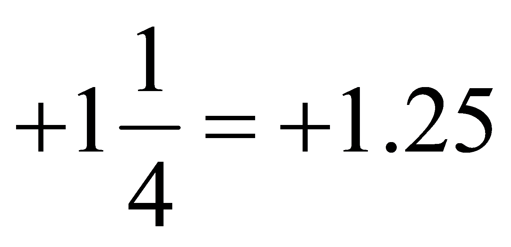
互为相反数，故此选项符合题意；C、和
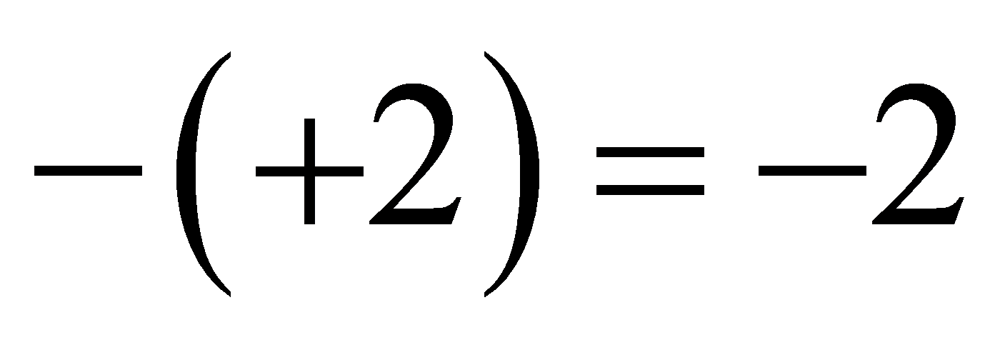
不是互为相反数，故此选项不符合题意；D、和不是互为相反数，故此选项不符合题意．
故选：B．
题型03 化简多重符号
【典例3】（23-24六年级下·全国·假期作业）
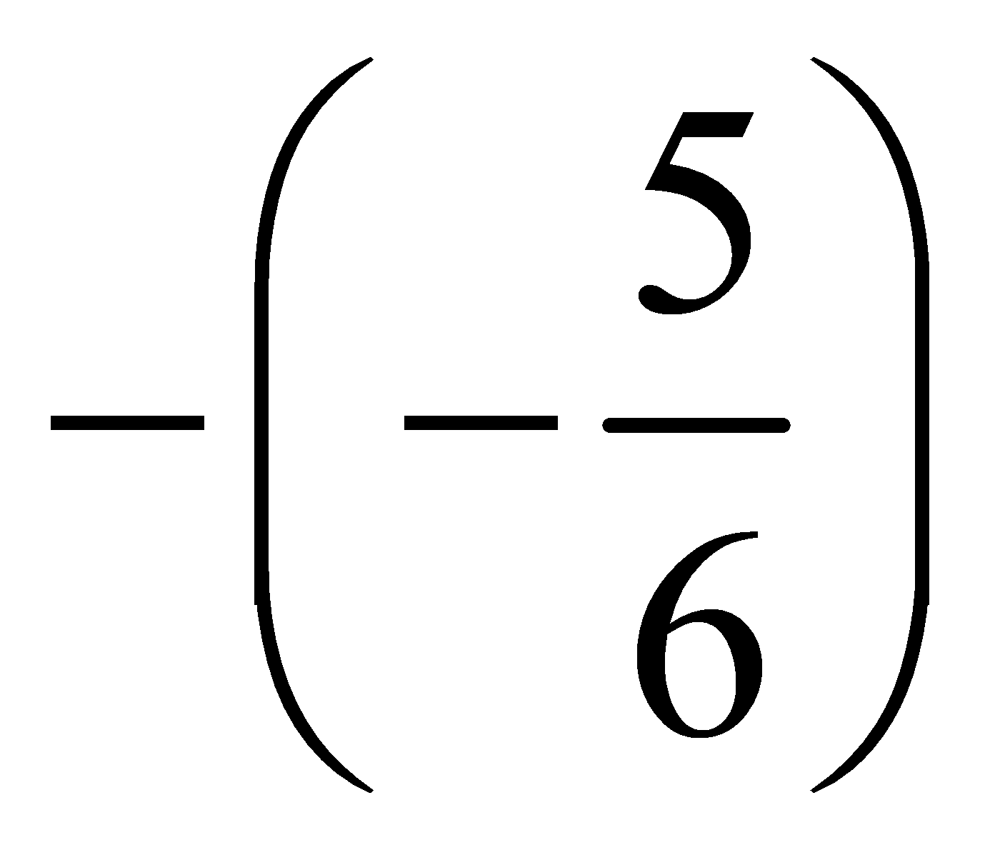
的相反数是 ．【答案】
【分析】本题考查了相反数的定义，求一个数的相反数，熟知只有符号不同的两个数互为相反数，0的相反数是0是解题的关键．先化简数字，根据相反数的定义求解即可．
【详解】解：
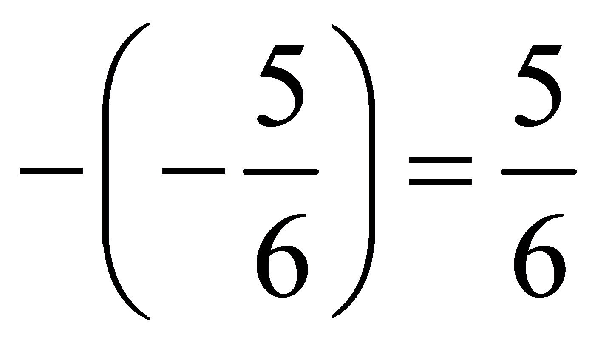
，
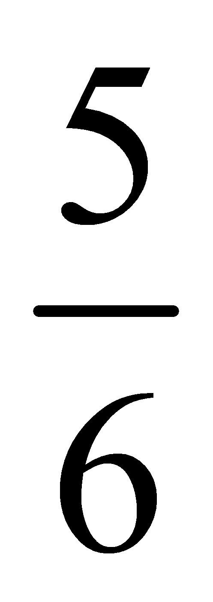
的相反数是，的相反数是．
【变式1】（23-24七年级上·湖北孝感·期末）化简
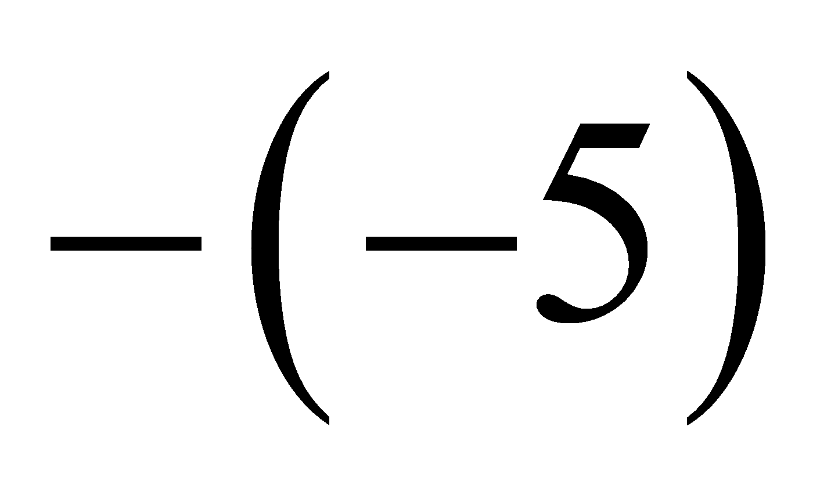
的结果是 ．【答案】
【分析】本题考查的是相反数的含义，直接根据相反数的定义求解即可.
【详解】解：
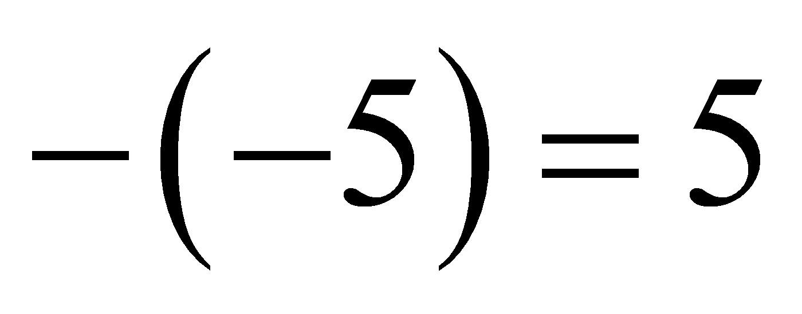
，故答案为：
【变式2】（23-24六年级下·黑龙江哈尔滨·阶段练习）化简
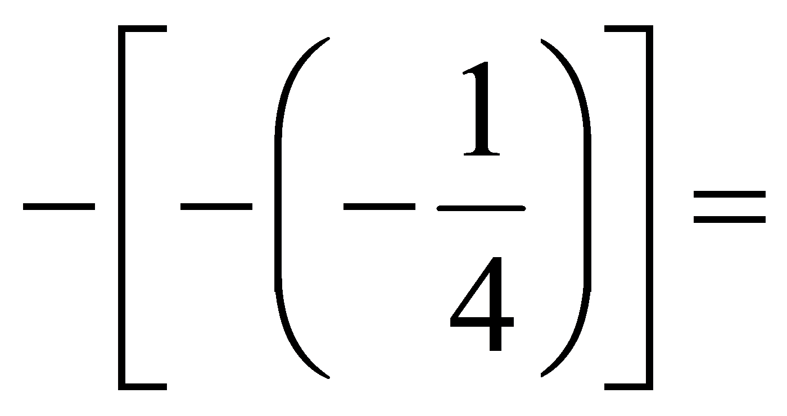
．【答案】 /
/
【分析】本题考查相反数，解题的关键是切记求一个数的相反数只需这个数前面加上一个负号就可以了，若原数带有符号（不论正负），则应先添括号，根据相反数的定义即可得到答案．
【详解】解：
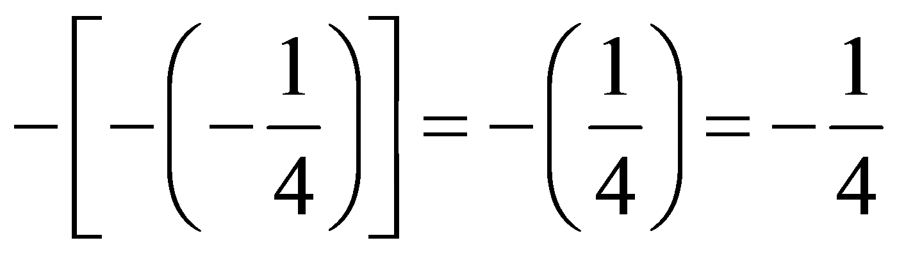
；故答案为：．
【变式3】（23-24七年级上·四川眉山·阶段练习）若
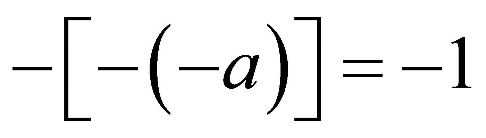
，a的相反数为 ，若 与
与 互为相反数，则a为
互为相反数，则a为 【答案】  1
1
【分析】本题考查了相反数及化简多重符号，先根据化简多重符合得 ，则可得a的相反数，根据相反数的性质得
，则可得a的相反数，根据相反数的性质得
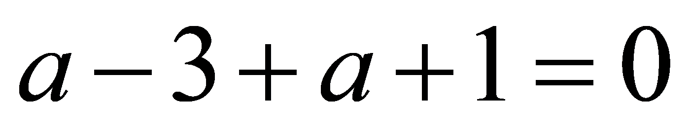
，进而可得，熟练掌握相反数的定义及化简多重符合的运算法则是解题的关键．【详解】解：若 ，则
，则
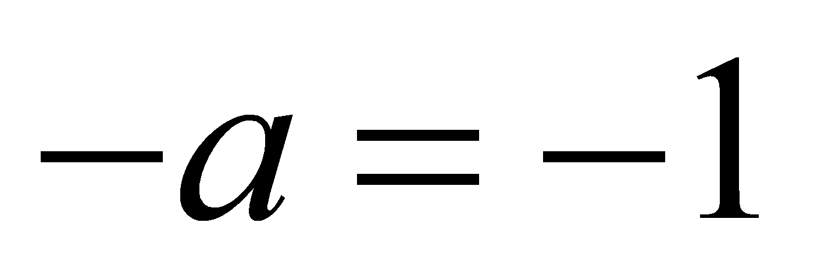
，即：，a的相反数为：，
若与互为相反数，则，即：，
故答案为：；1．
题型04 求一个数的绝对值
【典例4】（2024·山东泰安·一模）的绝对值是 ．
【答案】2024
【分析】本题主要考查了绝对值的意义，熟练掌握一个负数的绝对值是它的相反数是解题的关键．
根据绝对值的意义解答即可．
【详解】解：的绝对值是2024，
故答案为：2024．
【变式1】（23-24七年级上·浙江金华·期中） 的绝对值是 ，的相反数是 ．
的绝对值是 ，的相反数是 ．
【答案】 3
【分析】本题主要考查绝对值与相反数的定义，熟练掌握绝对值与相反数的定义是解题的关键．根据绝对值与相反数的定义即可得到答案．
【详解】解：的绝对值是3，的相反数是，
故答案为：3，.
【变式2】（23-24七年级上·广东惠州·阶段练习） 的相反数为 ；的绝对值是 ；绝对值是2的数是 ．
的相反数为 ；的绝对值是 ；绝对值是2的数是 ．
【答案】  5
5 
【分析】本题主要考查了绝对值和相反数．根据相反数的定义：如果两个数只有符号不同，数字相同，那么这两个数互为相反数，0的相反数是0；绝对值的定义：正数的绝对值是它本身，负数的绝对数是它的相反数，0的绝对值是0，进行求解即可
【详解】解：的相反数为；的绝对值是5；绝对值是2的数是．
故答案为：；5，．
【变式3】（23-24七年级上·广东广州·期中）（1） ；（2）
；（2）
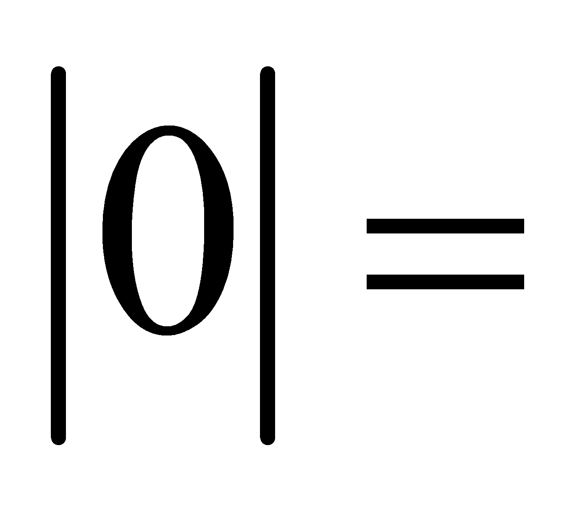
；（3） ；（4）
；（4） ．
．【答案】  0
0 
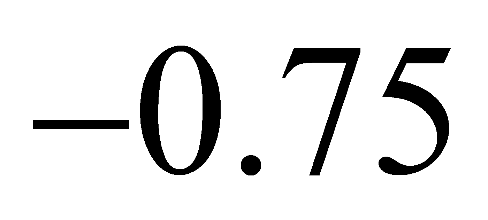
【分析】根据相反数的定义、绝对值的性质计算可得．
【详解】
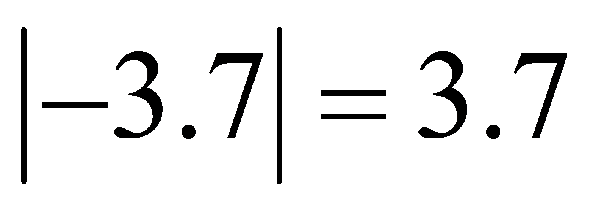
， ，
，
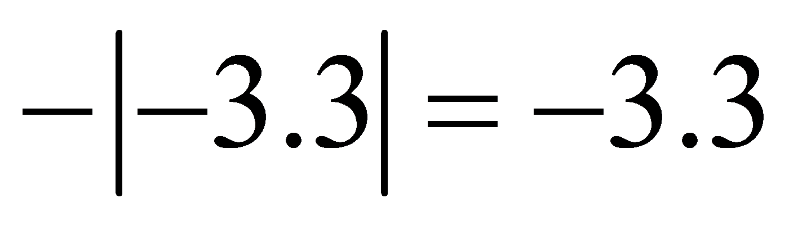
， ，
，
故答案为：；0；；；
【点睛】本题主要考查绝对值计算，解题的关键是熟练掌握绝对值的定义，正数的绝对值是是正数，负数的绝对值是它的相反数，零的绝对值是零．
题型05 绝对值的非负性
【典例5】（23-24六年级下·全国·假期作业）若 ，则
，则 ，
， ．
．
【答案】 

【分析】本题考查了绝对值的非负性；根据非负数的性质可得 ，即可求解．
，即可求解．
【详解】因为，且 ，
， ，
，
所以，所以 ．
．
故答案为：，．
【变式1】（23-24七年级上·江苏泰州·阶段练习）已知b、c满足 ，则
，则 的值是 ．
的值是 ．
【答案】 /
/ /
/
【分析】本题考查了绝对值的性质，根据，得到 ,
,
代入计算即可．
【详解】∵，
∴，
∴ ，
，
故答案为：或
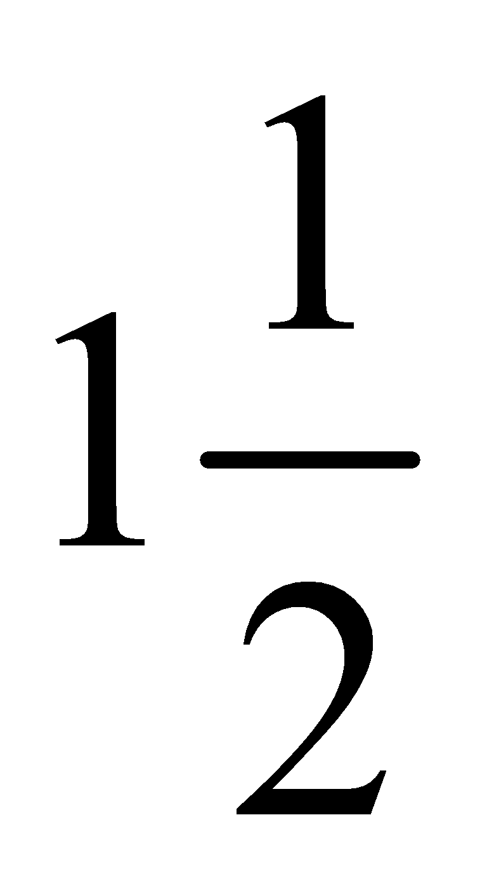
或 ．
．【变式2】（23-24六年级下·黑龙江哈尔滨·期中）已知 为有理数，则
为有理数，则 的最小值为 ．
的最小值为 ．
【答案】4
【分析】本题考查了绝对值的非负性，解题的关键是掌握正数的绝对值是它本身，负数的绝对值是它的相反数，0的绝对值是0．根据绝对值的非负性即可解答．
【详解】解：∵ ，
，
∴ ，
，
∴的最小值为4，
故答案为：4．
【变式3】（23-24七年级上·山东青岛·阶段练习）a是最大的负整数，且a、b、c满足
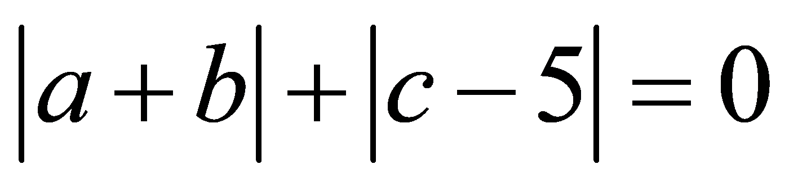
．那么a＝ ，b＝ ，c＝ ．【答案】 1 5
【分析】本题考查了绝对值非负性的应用，先根据已知条件得到a的值，然后根据绝对值的非负性得到b、c的值，掌握绝对值的非负性是解题的关键．
【详解】解：∵a是最大的负整数，
∴ ，
，
∵，
∴ ，
， ，
，
∴ ，
， ，
，
∴
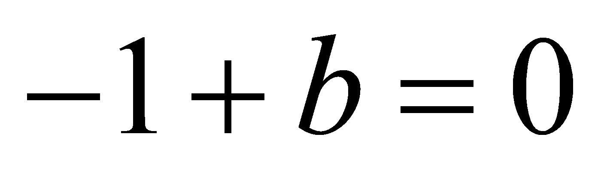
，，解得：
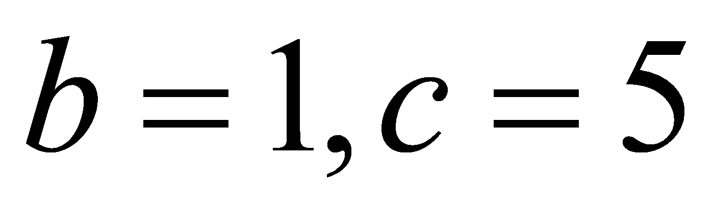
，∴ ，
，
故答案为：
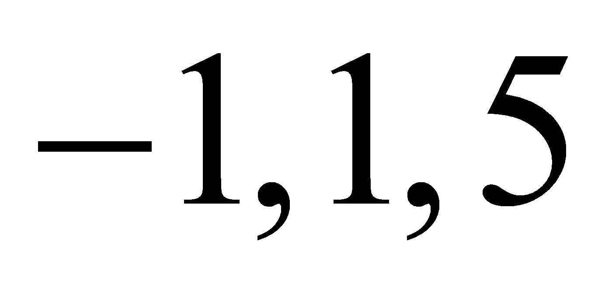
．题型06 绝对值的应用
【典例6】（23-24七年级上·江苏徐州·期中）出租车司机小飞某天上午营运全是在南北走向的某条大街上进行的，如果规定向南为正，向北为负，他这天上午的行程是（单位：千米）：
 ．
．
(1)将最后一名乘客送达目的地时，小张距上午出发点的距离是多少千米？在出发点的什么方向？
(2)若汽车耗油量为 升/千米，出车时，邮箱有油
升/千米，出车时，邮箱有油 升，若小张将最后一名乘客送达目的地，再返回出发地，问小张今天下午是否需要加油？若要加油至少需要加多少才能返回出发地？若不用加油，请说明理由．
升，若小张将最后一名乘客送达目的地，再返回出发地，问小张今天下午是否需要加油？若要加油至少需要加多少才能返回出发地？若不用加油，请说明理由．
【答案】(1)在出发点的北边，距离出发点4千米
(2)不需要加油，理由见解析
【分析】本题考查了正数和负数，注意返回出发地，还需加上距出发地距离．（1）根据有理数的加法运算，可得答案；（2）根据行车就耗油，可得耗油量，可得答案．
【详解】（1）解：
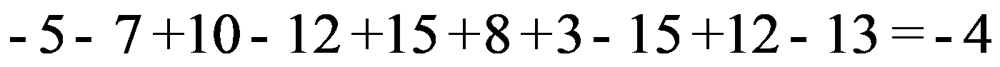
（千米），答：在出发点的北边，距离出发点4千米；
（2）不需要加油，理由：
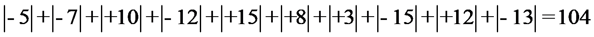
（千米），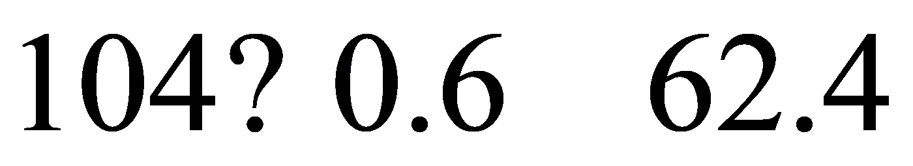
（升），∵
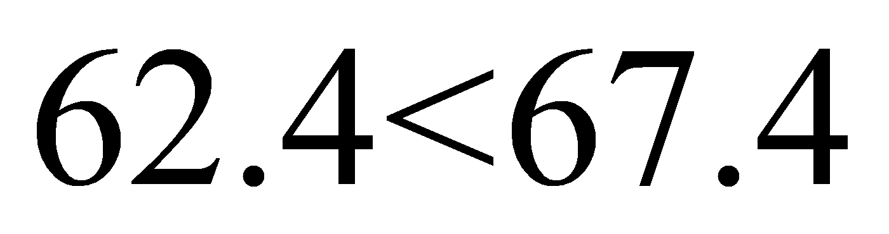
，∴不需要加油．
【变式1】（23-24七年级上·河北邢台·阶段练习）河北某交警每天都开车在南北走向的鼓楼大街上巡逻，假定从出发点开始，向南为正，向北为负，他这天下午巡逻记录里程如下（单位：）：
 ，，
，， ，
， ，
， ，
， ，．
，．
(1)这位交警在第几个路段行车里程最远？为多少千米？
(2)若汽车耗油量为 ，这天下午汽车共耗油多少升？
，这天下午汽车共耗油多少升？
【答案】(1)最后一个路段，
(2)升
【分析】（1）先利用绝对值求出每段路的行车里程，再比较大小，即可求解；
（2）计算出每段路的行车里程和 每千米的耗油量，即可求解．
每千米的耗油量，即可求解．
【详解】（1）解：由题意得
，，，，，，，
，
最后一个路段行车里程最远为．
（2）解：由题意得
（）；
答：这天下午汽车共耗油升.
【点睛】本题考查了绝对值的实际应用，理解绝对值的定义是解题的关键．
【变式2】（23-24七年级上·山东聊城·阶段练习）时风工厂生产一批零件，根据零件质量要求，零件的长度可以有 的误差，现抽查5个零件，检查数据记录如下表（超过规定长度的厘米数记为正数，不足规定长度的厘米数记为负数，单位：
的误差，现抽查5个零件，检查数据记录如下表（超过规定长度的厘米数记为正数，不足规定长度的厘米数记为负数，单位： ）：
）：
零件号数 | 1 | 2 | 3 | 4 | 5 |
数据 |
|
|

(1)这5个零件中，符合要求的零件是哪几个？
(2)这5个零件中，质量最好的是第几个？用学过的绝对值的知识来说明为什么质量最好？
【答案】(1)1，3，4，5符合要求
(2)第3个，说明见解析
【分析】（1）根据绝对值的意义，找到绝对值小于零件即为所求答案；
（2）根据绝对值的意义，找到绝对值最小的零件即可.
【详解】（1）解：零件的长度可以有的误差，
 ，
， ，
， ，
，
，，
1，3，4，5符合要求；
（2）解： 的绝对值最小，
的绝对值最小，
第3个零件质量最好．
【点睛】此题考查了正数和负数的概念以及绝对值的意义，绝对值越小表示数据越接近标准数据，绝对值越大表示数据越偏离标准数据，绝对值也能反映一组数据的离散程度；我们必须熟记并能灵活应用这些基本性质.
【变式3】（23-24七年级上·河北石家庄·阶段练习）某企业生产瓶装食用调和油，根据质量要求，净含量（不含包装）可以有的误差．现抽查6瓶食用调和油，超过规定净含量的升数记作正数，不足规定净含量的升数记作负数．检查结果如下表所示．
1 | 2 | 3 | 4 | 5 | 6 |
|
|
|


请用绝对值知识说明：
(1)哪几瓶是合乎要求的（即在误差范围内的）？
(2)哪一瓶净含量最接近规定的净含量？
【答案】(1)第1，4，5，6瓶符合要求
(2)第6瓶净含量最接近规定的净含量
【分析】（1）根据题意可以得出只要检查结果在 -0.002 到 +0.002 范围内的产品即为合乎要求的，即可得出答案；
（2） 根据结果越接近 0 质量越好，即可得出答案；
【详解】（1）因为，，，，，，所以这6瓶食用调和油中第1，4，5，6瓶符合要求．
（2）第6瓶的绝对值最小，所以第6瓶净含量最接近规定的净含量．
【点睛】本题考查了正负数在现实生活的应用，用正数和负数表示实际物理量时具有相反的意义，而相反的意义的量包含两个因素：一是意义相反；二是他们都是量，并且是同类的量
题型07 有理数大小的比较
【典例7】（2024六年级下·上海·专题练习）比较大小：  （填“
（填“ ”或“
”或“ ”或“
”或“ ”
”  ．
．
【答案】
【分析】利用绝对值性质及相反数定义将两数计算后进行比较即可．本题考查绝对值性质，相反数的定义及有理数的大小比较，此为基础且重要知识点，必须熟练掌握．
【详解】解：，，，
，
故答案为：．
【变式1】（23-24六年级下·黑龙江哈尔滨·期中）比较大小 （填“>”“<”或“=”）
（填“>”“<”或“=”）
【答案】
【分析】本题考查的是两个负数的大小比较，先比较两数的绝对值，再根据绝对值大的反而小即可得到答案．
【详解】∵，，，
∴，
∴
故答案为：．
【变式2】（23-24六年级下·黑龙江哈尔滨·期中）比较大小：
 （填“”或“”）．
（填“”或“”）．
【答案】
【分析】本题主要考查了有理数比较大小，根据正数大于0，0大于负数，两个负数比较大小，绝对值越大其值越小进行求解即可．
【详解】解：∵，
∴，
故答案为：．
【变式3】（23-24六年级下·上海杨浦·期中）比较大小： （请用“<”、“>”或“＝”填空）．
【答案】
【分析】本题考查了有理数的大小比较，解题的关键是掌握有理数的大小比较方法；
先化简，再根据有理数的大小比较法则比较即可．
【详解】
故答案为：．

一、单选题
1．（2024·广东东莞·一模） 的绝对值是（ ）
的绝对值是（ ）
A．2025 B． C． D．
C． D．
【答案】A
【分析】本题考查了绝对值的定义，根据绝对值的定义进行求解即可．
【详解】解：的绝对值是2025，
故选：A．
2．（23-24七年级下·重庆北碚·期末）下列各数中，最大的数是（ ）
A． B．3 C．
B．3 C． D．0
D．0
【答案】B
【分析】本题考查有理数的大小比较，解题关键是熟练掌握有理数大小的比较法则.根据正数都大于0，0大于负数，两个负数，绝对值大的反而小即可解答.
【详解】解：因为.
所以，，3，，0中，最大的数是3，
故选B.
3．（2024·江苏泰州·二模）下列计算正确的是（ ）
A． B． C． D．
【答案】C
【分析】本题考查了相反数中化简多重符号，逐项计算，即可解答，熟知相反数的概念是解题的关键．
【详解】解：A、，故A错误；
B、 ，故B错误；
，故B错误；
C、，故C正确；
D、，故D错误，
故选：C．
4．（23-24六年级下·全国·假期作业）已知，则a、b、c的大小关系是（ ）
A． B．
B． C． D．
C． D．
【答案】A
【分析】此题考查了绝对值，多重符号化简，有理数的大小比较，先化简个数，再根据有历史大小比较的方法比较即可．
【详解】解： ，
，
，
 ，
，
故选：A．
5．（23-24七年级下·黑龙江绥化·阶段练习）下列比较大小正确的是（ ）
A． B．
C． D．
【答案】B
【分析】本题考查了有理数的大小比较，掌握比较大小的方法是解题的关键．先根据绝对值和相反数的意义化简A、C、D三项中的相关有理数，然后根据正数大于负数即可进行比较；根据两个负数比较大小的方法即可判断B项，从而可得答案．
【详解】解：A、，，，故本选项错误，不符合题意；
B、，，，故本选项正确，符合题意；
C、，，，故本选项错误，不符合题意；
D、，，故本选项错误，不符合题意．
故选：B．
二、填空题
6．（23-24七年级上·江苏徐州·阶段练习）比较大小：
 ．（用“
．（用“ ”、“
”、“ ”或“
”或“ ”填空）
”填空）
【答案】
【分析】此题考查了比较负数大小，解题的关键是熟练掌握比较负数大小的方法．两个负数比较大小，绝对值大的反而小．根据负数比较大小的方法求解即可．两个负数比较大小，绝对值大的反而小．
【详解】解：∵，
∴．
故答案为：．
7．（23-24七年级下·湖南衡阳·阶段练习） 的相反数是 ；
的相反数是 ； 的绝对值是 ．
的绝对值是 ．
【答案】 2 /
【分析】本题主要考查相反数以及绝对值的定义，掌握相反数以及绝对值的定义是解题的关键．根据相反数以及绝对值的定义即可求解．
【详解】解：的相反数是 ；的绝对值是
；的绝对值是 ；
；
故答案为：；．
8．（23-24七年级下·湖南衡阳·阶段练习）若 与
与 互为相反数，则
互为相反数，则 的值为 ．
的值为 ．
【答案】2
【分析】此题主要考查相反数．根据相反数的性质得，求解即可，解题的关键是熟知相反数的性质．
【详解】解：∵与互为相反数，
，
解得： ，
，
故答案为：2．
9．（23-24七年级上·河南安阳·期末）风味酸牛奶的保存温度是，请写出一个适合风味酸牛奶保存的温度：  ．
．
【答案】 （答案不唯一）
（答案不唯一）
【分析】本题考查了不等式的含义，直接根据范围确定一个值即可得出答案．
【详解】风味酸牛奶的保存温度是，
风味酸牛奶保存的温度可以是
故答案为：（答案不唯一）．
10．（23-24七年级上·安徽宣城·期末）如果，那么化简 等于 ．
等于 ．
【答案】1
【分析】本题考查了绝对值的几何意义，根据表示数轴上表示m的点到表示有理数3，4的点距离之和解答即可．
【详解】解：由绝对值的几何意义可知，
表示数轴上表示m的点到表示有理数3，4的点距离之和，
∵，
∴数轴上表示m的点在表示有理数3，4的点之间，
等于表示有理数3，4的点之间的距离1，
故答案为：1．
三、解答题
11．（24-25七年级上·全国·假期作业）比较下列各对数的大小：
①与 ；
；
② 与
与 ；
；
③ 与
与 ；
；
④与 ．
．
【答案】①；②；③；④
【分析】本题主要考查有理数比较大小，绝对值的性质的运用，掌握有理数比较大小的方法是解题的关键．
①两个负数比较大小，绝对值大的反而小，由此即可求解；
②先化简绝对值，再根据负数小于零，即可求解；
③两个负数比较大小，绝对值大的反而小，由此即可求解；
④先化简，再根据负数小于零，即可求解．
【详解】解：①∵，，，
∴；
② ，
，
因为负数小于，
所以 ；
；
③∵，， ，
∴；
④分别化简两数，得：
，
∵正数大于负数，
∴．
12．（23-24七年级上·内蒙古呼伦贝尔·阶段练习）已知，求 的值．
的值．
【答案】， ，．
，．
【分析】解：本题考查了非负数的性质，根据几个非负数的和等于，那么这几个非负数都等于，得到， ，，解之即可求解，掌握非负数的性质是解题的关键．
，，解之即可求解，掌握非负数的性质是解题的关键．
【详解】解：∵，
∴，，，
∴，，．
13．（23-24七年级上·陕西西安·阶段练习）如图，检测4个篮球，其中质量超过标准质量的部分记为正数，不足标准质量的部分记为负数（单位：g），从轻重的角度看，最接近标准的球是几号？并说明理由．

【答案】（4）号球，理由见解析
【分析】由已知和要求，只要求出超过标准的克数和低于标准的克数的绝对值，绝对值小的则是最接近标准的球．
【详解】解：通过求4个篮球的绝对值得：
，，，，
的绝对值最小．
所以（4）号球是最接近标准的球．
【点睛】本题考查了正数和负数，解答本题的关键是明确正数和负数在题目中表示的实际意义．
14．（23-24七年级上·贵州黔西·阶段练习）将下列各数填在相应的集合里．
 ，
， ，4.3，
，4.3， ，4，0，
，4，0，
整数集合：{ }；
分数集合：{ }；
正数集合：{ }；
负数集合：{ }；
非负数集合：{ }．
【答案】见解析
【分析】
本题考查有理数的分类，根据有理数分为整数和分数，正数大于0，负数小于0，非负数大于等于0，是解题的关键．
【详解】解：，，
整数集合：{，4，0}；
分数集合：{，4.3，，}；
正数集合：{4.3，4，}；
负数集合：{，，}；
非负数集合：{4.3，4， ，0}．
15．（23-24七年级上·江苏扬州·期末）对数m、n，给出定义：若 ，则称是
，则称是 的“正比数”；若
的“正比数”；若 ，则称是的“反比数”．举例：因为
，则称是的“反比数”．举例：因为 ，所以3是
，所以3是 的“正比数”；因为，所以3是的“反比数”．点A、B在数轴上的点表示的数分别是
的“正比数”；因为，所以3是的“反比数”．点A、B在数轴上的点表示的数分别是 、
、 （且
（且 ），点
），点 是
是 的中点，在数轴上表示的数是
的中点，在数轴上表示的数是 ．
．
(1)①若是的“正比数”， ，则
，则 __________；
__________；
②若是的“反比数”，，则__________；
(2)若 ，e是的“反比数”，求；
，e是的“反比数”，求；
(3)若，e是a、b两数中其中一个数的“正比数”，请直接写出的值．
【答案】(1)①；②
(2)0或
(3)6或或或
【分析】本题主要考查了绝对值的意义，新定义运算，解题的关键是理解绝对值的意义，注意进行分类讨论．
（1）根据定义列式计算即可；
（2）先求出e的值，然后根据中点定义求出b的值即可；
（3）根据中点定义得出，分两种情况讨论：当e是a的“正比数”时，当e是b的“正比数”时，分别列式计算即可．
【详解】（1）解：①∵是的“正比数”，
∴，
∵，
∴，
∴ ；
；
故答案为：；
②∵是的“反比数”，
∴，
∵，
∴，
∴；
故答案为：；
（2）解：∵，e是的“反比数”，
∴，
解得：，
∵点A、B在数轴上的点表示的数分别是、，点是的中点，在数轴上表示的数是，
∴，
即，
解得： 或
或 ．
．
（3）解：∵点A、B在数轴上的点表示的数分别是、，点是的中点，在数轴上表示的数是，
∴，
即，
∵，
∴当e是a的“正比数”时，，
即，
解得：，
∴，
解得： 或；
或；
当e是b的“正比数”时，，
即，
∴，
解得：或；
综上分析可知，b的值为6或或或．